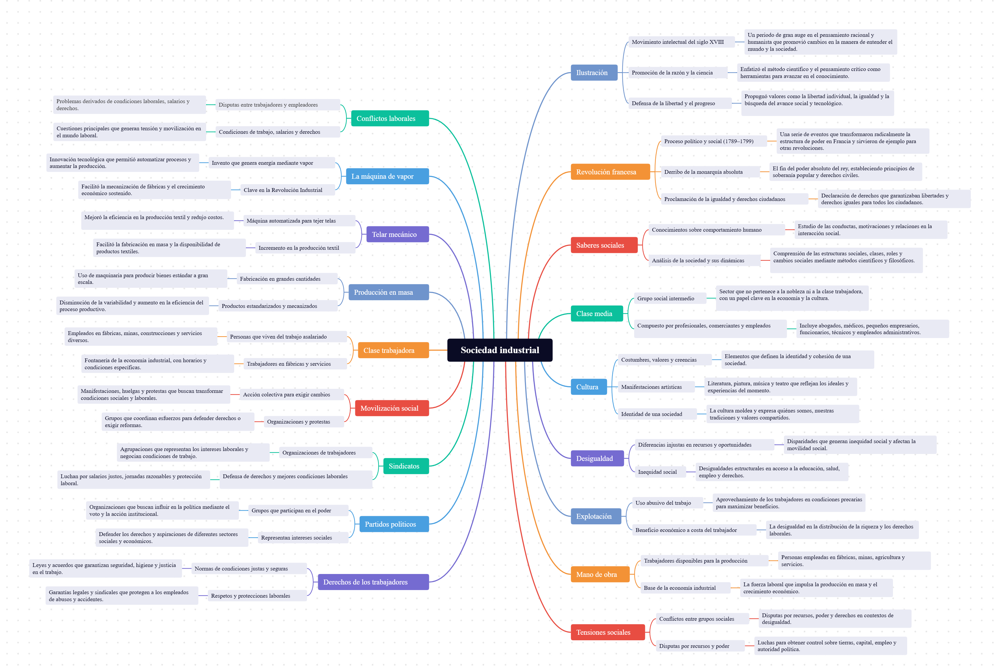

El surgimiento de la sociedad industrial: Un analisis critico - Compiló: Mgs: Álvaro Diaz

Actividad
1. Elaborar un glosario con las palabras resaltadas en negrilla en el texto.
Sociedad industrial: Organización social basada en la producción mecanizada y el trabajo en fábricas.Ilustración: Movimiento intelectual del siglo XVIII que promovió la razón, la ciencia y la libertad como bases del progreso.
Revolución francesa: Proceso Politico y social (1789-1799) que derribó la monarquía absoluta y proclamó la igualdad y los derechos ciudadanos.
Saberes sociales: Conocimientos que permiten comprender y analizar el comportamiento humano en sociedad.
Clase media: Grupo social intermedio entre ricos y pobres, formado por profesionales, comerciantes y empleados.
Cultura: Conjunto de costumbres, valores, creencias y manifestaciones artísticas de una sociedad.
Desigualdad: Diferencia injusta en el acceso a recursos, oportunidades o derechos.
Explotación: Uso abusivo del trabajo de una persona para obtener beneficio económico.
Mano de obra: Conjunto de trabajadores disponibles para realizar tareas productivas.
Tensiones sociales: Conflictos o desacuerdos entre distintos grupos de una sociedad.
Conflictos laborales: Disputas entre trabajadores y empleadores por condiciones de trabajo, salario o derechos.
La máquina de vapor: Invento que usa vapor para generar energía y mover maquinaria, clave en la Revolución Industrial.
Telar mecánico: Máquina que automatiza el tejido de telas, aumentando la producción textil.
Producción en masa: Fabricación de grandes cantidades de productos estandarizados mediante maquinaria.
Clase trabajadora: Grupo social formado por personas que viven de su trabajo asalariado en fábricas o servicios.
Movilización social: Acción colectiva de personas que se organizan para exigir cambios sociales o políticos.
Sindicatos: Organizaciones de trabajadores que defienden sus derechos y mejores condiciones laborales.
Partidos políticos: Grupos organizados que buscan participar en el poder y representar intereses sociales.
Derechos de los trabajadores: Normas que garantizan condiciones justas, seguridad y respeto en el trabajo.
2. Elaborar un mapa mental con las palabras del glosario.

3. ¿Indagar como la evolución de los saberes sociales durante este periodo afectó a la sociedad?
Rta: La evolución de los saberes sociales durante ese perido afectó a la sociedad